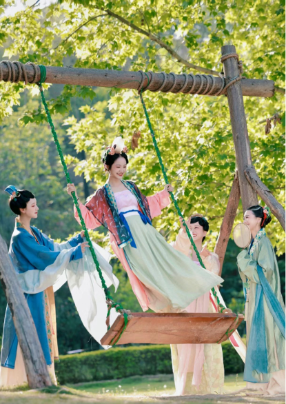

Rewind
When you activate the time machine, you will be transported back to China a thousand years ago, spending a day
in the capital of the Southern Song Dynasty, Lin an. Are you ready?

Select your character
Character: Female
Women in the Song Dynasty liked to adorn themselves with fresh flowers and pearls.
Their clothing was primarily made of silk fabric, and during this era, attire was characterized by
subtle and elegant colors such as sky blue, deep red, light green, and goose yellow, among others.
Clothing and accessories also symbolized social status, and various hairstyles reflected different
statuses."
Character: Male
In the Song Dynasty, it was a custom for men to wear decorative hairpins, and
receiving fresh flowers from the emperor was considered a great honor. Given the high regard for
scholars and literati in the Song Dynasty, men's clothing primarily featured light and subdued colors.
Noble men would also wear jade ornaments and jade crowns. The overall style was characterized by
simplicity and luxury.
Because ancient China adhered to a binary gender system, even though there were instances
of non-binary and fluid genders in historical records and literary works, they were not widely recognized.
Therefore, when choosing roles, more conventional genders were typically assigned.
Lin an -- The Capital City of South Song Dynasty

market
party
Enjoy Traditional Chinese Food

Snacks -- Song Guozi
In the Song Dynasty, there was a great emphasis on the art of tea, which led to more innovations in tea snacks. Among the most famous were the diverse varieties of "hua su." Hua su came in various types, made from flour, sheep's milk, and cow's milk. They featured a crispy outer layer and were filled with red bean paste, flower paste, etc.

Drinks -- Yang meiyin
At that time, beverage culture thrived. “Dian tea” which was similar to creating latte art. It involved using tea froth to create painting in the tea. People organized "Dian tea" competitions -- "Dou Cha." There were a variety of fruit and herbal beverages. Among the most popular during the summer were chilled fruit drinks, such as Yang Mei Yin.

Foods -- Dong porou
It is named after Su Dongpo, a renowned Song Dynasty poet and gastronome. Dongpo Rou is made from succulent cuts of pork belly, which are braised to perfection in a mixture of soy sauce, wine, and a blend of aromatic spices. The result is tender, melt-in-your-mouth pork with a luscious, sweet, and savory taste.
Let's have fun



 time is up
Back to homepage
time is up
Back to homepage